Cloud Database Architecture
Introduction
Databases are the persistent memory of your applications. While compute is ephemeral and networking is transient, databases hold the state that gives your application meaning: user accounts, transactions, product catalogs, audit logs. Choosing the right database architecture is one of the most consequential decisions in system design because databases are the hardest component to change once data is in them.
Cloud providers offer a spectrum of managed database services, each optimized for different access patterns, consistency requirements, and scale characteristics. This document covers that spectrum — from relational databases through NoSQL, in-memory caches, graph databases, and time-series stores — with deep dives into the architectures that make them work.
The Database Spectrum
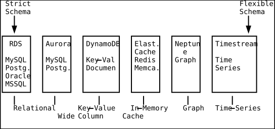
CAP Theorem in Practice
The CAP theorem states that a distributed system can provide at most two of three guarantees simultaneously:
- Consistency (C): Every read receives the most recent write
- Availability (A): Every request receives a response (not necessarily the latest)
- Partition tolerance (P): The system continues operating despite network splits
In practice, network partitions always happen in distributed systems, so the real choice is between CP (consistent but may reject requests during partitions) and AP (available but may return stale data during partitions).
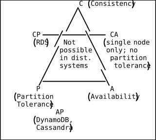
AWS services and their CAP positioning:
- RDS Multi-AZ: CP (synchronous replication, strongly consistent)
- Aurora: CP (quorum writes, strongly consistent reads from primary)
- DynamoDB: AP by default (eventually consistent reads), CP option (strongly consistent reads at 2x cost)
- ElastiCache Redis: CP within a shard, AP across a cluster with replicas
Amazon RDS Architecture
What Is RDS?
Relational Database Service manages the operational burden of running a relational database: provisioning, patching, backups, recovery, failover, and scaling. You choose the engine (MySQL, PostgreSQL, MariaDB, Oracle, SQL Server), and AWS handles the infrastructure.
Single-AZ Architecture
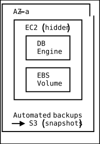
Multi-AZ Architecture (High Availability)
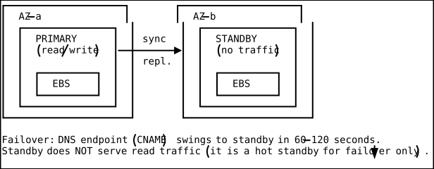
RDS Multi-AZ with Two Readable Standbys
AWS now offers Multi-AZ DB cluster deployment with one primary and two readable standby instances using a write-ahead log (WAL) based replication. This provides:
- Failover in ~35 seconds (faster than classic Multi-AZ)
- Read replicas that can serve read traffic
- Local writes (transaction log applied locally)
Read Replicas
Read replicas use asynchronous replication to offload read traffic from the primary:
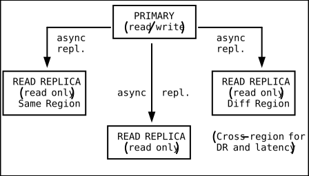
Key characteristics:
- Up to 15 read replicas for Aurora, 5 for RDS MySQL/PostgreSQL
- Asynchronous: slight replication lag (milliseconds to seconds)
- Can be promoted to standalone primary (for DR)
- Cross-region replicas incur data transfer charges
Automated Backups and Parameter Groups
# Create RDS instance with automated backups
aws rds create-db-instance \
--db-instance-identifier myapp-db \
--db-instance-class db.r6g.xlarge \
--engine postgres \
--engine-version 15.4 \
--master-username admin \
--master-user-password "${DB_PASSWORD}" \
--allocated-storage 100 \
--storage-type gp3 \
--iops 3000 \
--multi-az \
--backup-retention-period 14 \
--preferred-backup-window "03:00-04:00" \
--preferred-maintenance-window "sun:05:00-sun:06:00" \
--storage-encrypted \
--kms-key-id arn:aws:kms:us-east-1:123456789012:key/abc-123 \
--db-parameter-group-name myapp-params \
--vpc-security-group-ids sg-database \
--db-subnet-group-name myapp-subnet-groupAmazon Aurora Architecture
What Makes Aurora Different
Aurora is AWS’s cloud-native relational database. While RDS runs traditional database engines on EC2/EBS, Aurora redesigns the storage layer for the cloud.
Shared Storage Volume
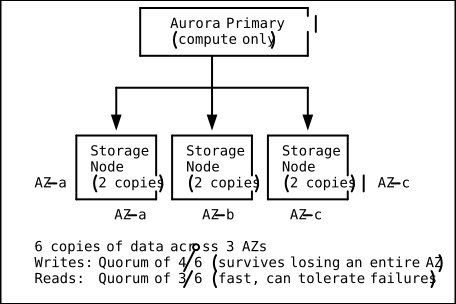
Key innovations:
-
Log-structured storage: Only redo log records are sent to storage nodes, not full data pages. This reduces network I/O by 6x compared to traditional replication.
-
6-way replication with quorum: Data is replicated 6 times across 3 AZs. Writes require 4/6 acknowledgments, reads require 3/6. This means Aurora survives losing an entire AZ without data loss and without interrupting writes.
-
Auto-scaling storage: Storage grows automatically in 10 GB increments, up to 128 TB. You never provision storage.
-
Instant crash recovery: No replay of redo logs on startup. The storage layer handles recovery continuously in the background.
Aurora Replicas vs RDS Read Replicas
| Feature | Aurora Replica | RDS Read Replica |
|---|---|---|
| Shared storage | Yes (same volume) | No (separate EBS) |
| Replication lag | Typically < 20ms | Can be seconds |
| Failover target | Yes (automatic) | Manual promotion |
| Number supported | Up to 15 | Up to 5 |
| Performance impact on write | Minimal (shared storage) | Some (replication stream) |
Aurora Serverless v2
Aurora Serverless v2 scales compute capacity up and down in fine-grained increments (0.5 ACU) based on demand. Unlike v1 (which had scaling pauses), v2 scales instantly and can scale to zero for development workloads.
# Create Aurora Serverless v2 cluster
aws rds create-db-cluster \
--db-cluster-identifier myapp-serverless \
--engine aurora-postgresql \
--engine-version 15.4 \
--serverless-v2-scaling-configuration MinCapacity=0.5,MaxCapacity=128 \
--master-username admin \
--master-user-password "${DB_PASSWORD}"
aws rds create-db-instance \
--db-instance-identifier myapp-serverless-1 \
--db-cluster-identifier myapp-serverless \
--db-instance-class db.serverless \
--engine aurora-postgresqlAmazon DynamoDB Architecture
What Is DynamoDB?
DynamoDB is a fully managed NoSQL database that provides single-digit millisecond performance at any scale. It is serverless: no instances to manage, no storage to provision. You define a table, choose a capacity mode, and start reading/writing.
Partition Keys and Sort Keys
DynamoDB stores data in partitions. The partition key determines which partition stores an item (via consistent hashing). The optional sort key enables range queries within a partition.
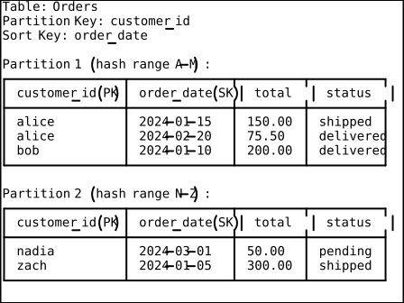
Global Secondary Indexes (GSI) and Local Secondary Indexes (LSI)
Base Table: PK=customer_id, SK=order_date
→ Query: "Get all orders for alice in January 2024" ✓
GSI: PK=status, SK=order_date
→ Query: "Get all pending orders sorted by date" ✓
LSI: PK=customer_id, SK=total (same PK, different SK)
→ Query: "Get alice's orders sorted by total amount" ✓
GSI: Creates a fully independent index with a different partition key. Data is asynchronously replicated from the base table. You can create GSIs anytime. Each GSI has its own provisioned capacity.
LSI: Must share the same partition key as the base table but with a different sort key. Must be defined at table creation time. Uses the base table’s capacity.
Capacity Modes
On-Demand: Pay per request. No capacity planning. DynamoDB handles scaling automatically. Best for unpredictable traffic patterns.
Provisioned: You specify read capacity units (RCU) and write capacity units (WCU). Cheaper than on-demand for predictable workloads. Supports auto-scaling.
1 RCU = 1 strongly consistent read/sec for items up to 4 KB
= 2 eventually consistent reads/sec for items up to 4 KB
1 WCU = 1 write/sec for items up to 1 KB
DAX (DynamoDB Accelerator)
DAX is an in-memory cache that sits in front of DynamoDB, providing microsecond response times for read-heavy workloads.
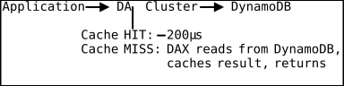
DAX is API-compatible with DynamoDB — change the endpoint, and your application uses the cache automatically without code changes.
DynamoDB Streams
Streams capture a time-ordered sequence of item-level changes in a table. Each stream record contains the item’s key attributes and the before/after images of modified attributes.
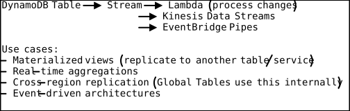
Single-Table Design
In DynamoDB, the best practice is often to store multiple entity types in a single table using carefully designed partition keys and sort keys:
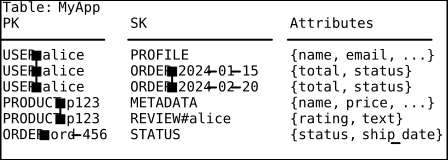
This enables efficient access patterns:
- Get user profile:
PK=USER#alice, SK=PROFILE - Get all orders for user:
PK=USER#alice, SK begins_with ORDER# - Get product with all reviews:
PK=PRODUCT#p123
Amazon ElastiCache
Redis vs Memcached
| Feature | Redis | Memcached |
|---|---|---|
| Data structures | Strings, lists, sets, | Strings only |
| sorted sets, hashes, etc. | ||
| Persistence | RDB snapshots, AOF | No persistence |
| Replication | Primary/replica | No replication |
| Clustering | Redis Cluster (sharding) | Multi-node (no sharding) |
| Pub/Sub | Yes | No |
| Lua scripting | Yes | No |
| Multi-threaded | Single-threaded (6.x+ | Multi-threaded |
| has I/O threading) | ||
| Use case | Sessions, leaderboards, | Simple object caching |
| real-time analytics, | ||
| queues, geospatial |
Default choice: Redis. Memcached only when you need multi-threaded performance for simple key-value caching and don’t need any of Redis’s advanced features.
Caching Strategies
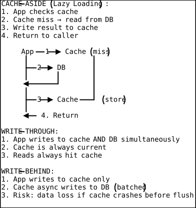
Specialty Databases
Amazon Neptune (Graph)
For highly connected data where relationships are as important as the data itself: social networks, fraud detection, recommendation engines, knowledge graphs.
Amazon Timestream (Time-Series)
Optimized for time-stamped data: IoT sensor readings, application metrics, DevOps monitoring. Automatically tiers data from in-memory to magnetic storage based on age.
Amazon QLDB (Ledger)
Immutable, cryptographically verifiable transaction log. Every change is recorded and cannot be altered. Use cases: financial transactions, supply chain tracking, regulatory audit trails.
Database Migration Strategies
The 6 R’s Applied to Databases
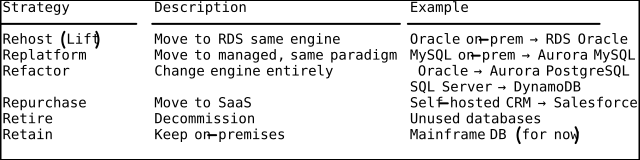
AWS Database Migration Service (DMS)
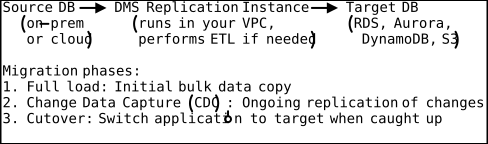
Database Decision Flowchart
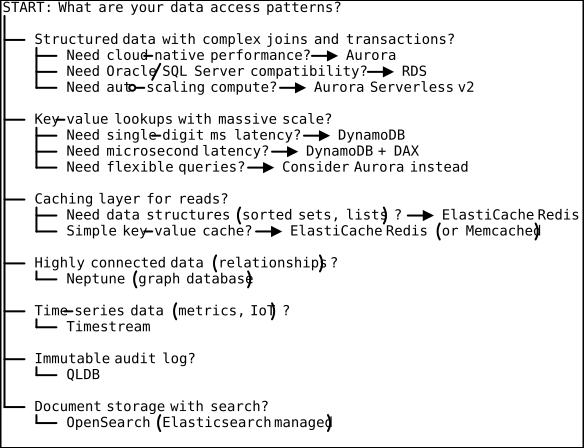
Practical Takeaways
-
Start with Aurora PostgreSQL for relational workloads. It provides 5x the throughput of standard PostgreSQL, automatic storage scaling, and fast failover.
-
Use DynamoDB for high-scale, well-understood access patterns. If you can model your access patterns upfront, DynamoDB delivers unmatched scale and operational simplicity. If your access patterns evolve frequently, a relational database gives more flexibility.
-
Cache aggressively. Add ElastiCache Redis between your application and database. Most read-heavy applications see 80%+ cache hit rates, dramatically reducing database load and latency.
-
Enable Multi-AZ for production RDS. The ~2x cost is justified by automatic failover. Do not run single-AZ databases in production.
-
Use read replicas for read scaling, not for HA. Read replicas do not provide automatic failover (except Aurora replicas).
-
Design DynamoDB tables around access patterns, not entities. Plan your partition key, sort key, and GSIs around the queries you need to run, then fit the data model to those keys.
-
Encrypt databases at rest and in transit. RDS and Aurora support encryption at rest via KMS (must be enabled at creation — cannot encrypt an existing unencrypted database) and TLS for client connections.
-
Automate backups and test restores. Automated backups are worthless if you have never verified that a restore actually works. Schedule quarterly restore drills.
DSA Connections
B+ Trees — RDS and Aurora Indexing
A B+ tree is a self-balancing tree where all values are stored in leaf nodes linked together, with internal nodes containing only keys for navigation. B+ trees provide O(log n) lookups and support efficient range scans by walking the linked leaf chain. Every relational database engine available in RDS (MySQL, PostgreSQL, Oracle, SQL Server) uses B+ trees as the default index structure. When you create an index on a column like order_date, the database builds a B+ tree where internal nodes guide searches and leaf nodes contain the indexed values plus pointers to the actual table rows. A query like SELECT * FROM orders WHERE order_date BETWEEN '2024-01-01' AND '2024-03-31' traverses the tree to the first matching leaf in O(log n), then walks the linked leaf list to collect all results sequentially. Aurora’s shared storage layer replicates these B+ tree structures across 6 copies in 3 AZs, ensuring that the index data survives even a full AZ failure without needing to rebuild the tree.
LSM Trees — DynamoDB Write-Optimized Storage
A Log-Structured Merge-tree (LSM tree) is a data structure that buffers writes in an in-memory sorted structure (memtable), then periodically flushes them to sorted, immutable files on disk (SSTables), and merges these files in the background. LSM trees provide O(1) amortized write performance at the cost of slightly slower reads, which must check multiple levels. DynamoDB uses an LSM-tree-based storage engine internally, which is why it achieves consistent single-digit-millisecond write latency regardless of table size. When you perform a PutItem, the write goes to an in-memory buffer first (fast), is acknowledged after replication to multiple storage nodes, and is later compacted into sorted runs on disk. This architecture explains DynamoDB’s capacity model: WCUs map to the rate at which the memtable can absorb writes and the compaction process can keep up. The trade-off is that reads may need to check both the memtable and multiple on-disk levels, which is why DAX (the in-memory cache) provides such a dramatic speedup for read-heavy workloads — it bypasses the LSM tree’s multi-level read path entirely.
Hash Indexes — DynamoDB Partition Key Lookups via Consistent Hashing
A hash index maps keys to storage locations using a hash function, providing O(1) average-case lookups for exact-match queries but no support for range scans on the hashed key. DynamoDB’s partition key is a hash index: when you query PK = 'USER#alice', DynamoDB hashes this value to determine which partition stores the item, then retrieves it in constant time. This is why partition key queries are so fast and why you cannot perform range queries on the partition key itself — hash functions destroy ordering. The sort key, by contrast, is stored in sorted order within each partition (using a B-tree-like structure), which is why SK begins_with 'ORDER#' works as a range scan. Single-table design in DynamoDB is essentially the art of designing composite hash keys (PK = 'USER#alice', SK = 'ORDER#2024-01-15') that align with your access patterns, so that each query maps to a single hash lookup followed by an efficient range scan within that partition.
Doubly-Linked Lists + Hash Maps — ElastiCache Redis LRU Eviction
Redis implements its LRU eviction policy using an approximated LRU algorithm that samples a configurable number of keys and evicts the least recently used among the sample. Under the hood, each Redis key-value entry maintains an LRU clock field (recording the last access time), and the key space is organized as a hash table for O(1) lookups. When Redis reaches its maxmemory limit and the eviction policy is allkeys-lru, it samples N random keys (default 5), checks their LRU clock values, and evicts the oldest. A classic textbook LRU cache uses a doubly-linked list (for O(1) move-to-front on access) combined with a hash map (for O(1) key lookup), achieving exact LRU in O(1) per operation. Redis trades exact LRU for approximate LRU to avoid the memory overhead of maintaining a full linked list across millions of keys — a pragmatic engineering decision that the document’s caching strategy section implicitly relies on when recommending Redis for session stores and read caches.